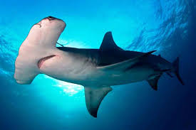

Introducción
Los tiburones son uno de los grupos de peces más antiguos y diversificados del planeta. Con más de 500 especies, estos animales han evolucionado para adaptarse a diferentes entornos y ecosistemas.
| Especie de Tiburón | Longitud Promedio (metros) | Peso Promedio (kg) | Distribución | Dieta |
|---|---|---|---|---|
| Tiburón Blanco (Carcharodon carcharias) | 4-5 | 1.500-2.000 | Océanos tropicales y subtropicales | Peces, mamíferos marinos y otros tiburones |
| Tiburón Tigre (Galeocerdo cuvier) | 3-4 | 900-1.900 | Océanos tropicales y subtropicales | Peces, crustáceos y mamíferos marinos |
| Tiburón Martillo (Sphyrna mokarran) | 2-3 | 200-500 | Océanos tropicales y subtropicales | Peces, crustáceos y moluscos |
| Tiburón Azul (Prionace glauca) | 2-3 | 100-300 | Océanos templados y subtropicales | Peces, crustáceos y moluscos |
| Tiburón Mako (Isurus spp.) | 2-3 | 100-300 | Océanos templados y subtropicales | Peces, crustáceos y moluscos |
| Tiburón de Arena (Carcharias taurus) | 1-2 | 10-50 | Océanos templados y subtropicales | Peces, crustáceos y moluscos |
| Tiburón de Boca Grande (Megachasma pelagica) | 5-7 | 1.000-2.000 | Océanos tropicales y subtropicales | Plankton y pequeños peces |
| Tiburón de Fondo (Centrophantes spp.) | 1-2 | 10-50 | Océanos profundos | Peces, crustáceos y moluscos |
| Tiburón de Río (Glyphis spp.) | 1-2 | 10-50 | Ríos y estuarios | Peces, crustáceos y moluscos |
| Tiburón de Galapagos (Carcharhinus galapagensis) | - | - | - | - |
Especies de Tiburones
Tiburón Blanco (Carcharodon carcharias)
Tiburón Tigre (Galeocerdo cuvier)

Tiburón Martillo (Sphyrna mokarran)
Tiburón Azul (Prionace glauca)

Tiburón Mako (Isurus spp.)